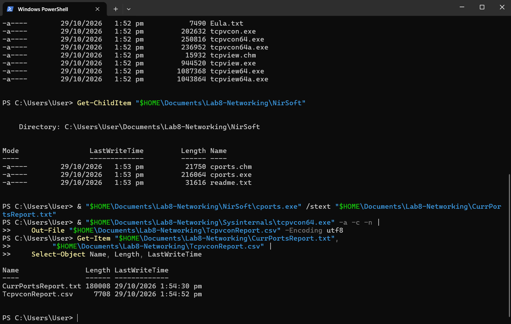

Network reporting and system utilities
Used PowerShell alongside NirSoft and Sysinternals utilities to generate network-related reports. The practical work included exporting CurrPorts information and TCP connection details into report files, then checking that the files had been created.

Evidence: Lab 8 PowerShell screenshot showing CurrPortsReport.txt and TcpvconReport.csv.